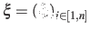
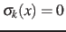
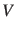
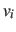
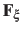
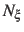
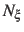

Next: ABF requirements on collective Up: Biasing and analysis methods Previous: Biasing and analysis methods Contents Index
For a full description of the Adaptive Biasing Force method, see reference [4]. For details about this implementation, see references [5] and [6]. When publishing research that makes use of this functionality, please cite references [4] and [6].
An alternate usage of this feature is the application of custom tabulated biasing potentials to one or more colvars. See inputPrefix and updateBias below.
ABF is based on the thermodynamic integration (TI) scheme for
computing free energy profiles. The free energy as a function
of a set of collective variables

is defined from the canonical distribution of
 ,
,
 :
:
In the TI formalism, the free energy is obtained from its gradient,
which is generally calculated in the form of the average of a force
 exerted on
exerted on
 , taken over an iso-
, taken over an iso-
 surface:
surface:
Several formulae that take the form of (12) have been
proposed. This implementation relies partly on the classic
formulation [7], and partly on a more versatile scheme
originating in a work by Ruiz-Montero et al. [8],
generalized by den Otter [9] and extended to multiple
variables by Ciccotti et al. [10]. Consider a system
subject to constraints of the form
. Let
(
 be arbitrarily chosen vector fields
(
be arbitrarily chosen vector fields
(
 ) verifying, for all
) verifying, for all  ,
,
 , and :
, and :
then the following holds [10]:
where  is the potential energy function.
 can be interpreted as the direction along which the force
acting on variable  is measured, whereas the second term in the
average corresponds to the geometric entropy contribution that appears
as a Jacobian correction in the classic formalism [7].
Condition (13) states that the direction along
which the system force on
is measured, whereas the second term in the
average corresponds to the geometric entropy contribution that appears
as a Jacobian correction in the classic formalism [7].
Condition (13) states that the direction along
which the system force on  is measured is orthogonal to the
gradient of
is measured is orthogonal to the
gradient of  , which means that the force measured on
, which means that the force measured on  does not act on
does not act on  .
.
Equation (14) implies that constraint forces are orthogonal to the directions along which the free energy gradient is measured, so that the measurement is effectively performed on unconstrained degrees of freedom.
In the framework of ABF,
 is accumulated in bins of finite size
 ,
thereby providing an estimate of the free energy gradient
according to equation (12).
The biasing force applied along the collective variables
to overcome free energy barriers is calculated as:
,
thereby providing an estimate of the free energy gradient
according to equation (12).
The biasing force applied along the collective variables
to overcome free energy barriers is calculated as:
where

 denotes the current estimate of the
free energy gradient at the current point
denotes the current estimate of the
free energy gradient at the current point
 in the collective
variable subspace, and
in the collective
variable subspace, and
 is a scaling factor that is ramped
from 0 to 1 as the local number of samples  increases
to prevent nonequilibrium effects in the early phase of the simulation,
when the gradient estimate has a large variance.
See the fullSamples parameter below for details.
is a scaling factor that is ramped
from 0 to 1 as the local number of samples  increases
to prevent nonequilibrium effects in the early phase of the simulation,
when the gradient estimate has a large variance.
See the fullSamples parameter below for details.
As sampling of the phase space proceeds, the estimate

 is progressively refined. The biasing
force introduced in the equations of motion guarantees that in
the bin centered around
is progressively refined. The biasing
force introduced in the equations of motion guarantees that in
the bin centered around
 ,
the forces acting along the selected collective variables average
to zero over time. Eventually, as the undelying free energy surface is canceled
by the adaptive bias, evolution of the system along
,
the forces acting along the selected collective variables average
to zero over time. Eventually, as the undelying free energy surface is canceled
by the adaptive bias, evolution of the system along
 is governed mainly by diffusion.
Although this implementation of ABF can in principle be used in
arbitrary dimension, a higher-dimension collective variable space is likely
to result in sampling difficulties.
Most commonly, the number of variables is one or two.
is governed mainly by diffusion.
Although this implementation of ABF can in principle be used in
arbitrary dimension, a higher-dimension collective variable space is likely
to result in sampling difficulties.
Most commonly, the number of variables is one or two.